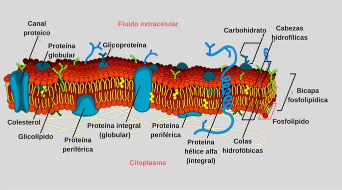

Membrana Celular
La membrana de la célula, también llamada membrana citoplasmática, se encuentra en las células y separa su interior del medio exterior que las rodea. La membrana celular consiste en una bicapa (doble capa) lipídica que es semipermeable. Entre otras funciones, la membrana celular regula el transporte de sustancias que entran y salen de la célula.

Entre sus características destacan:
- Ofrece un límite a la célula y determina su extensión
- Crea una "pared" o "contenedor", que ayuda a mantener la diferencia de los componentes fisico-químicos del interior y el exterior celular.
- Permitir el transporte selectivo de moléculas.
- Participar en la comunicación celular mediante receptores.